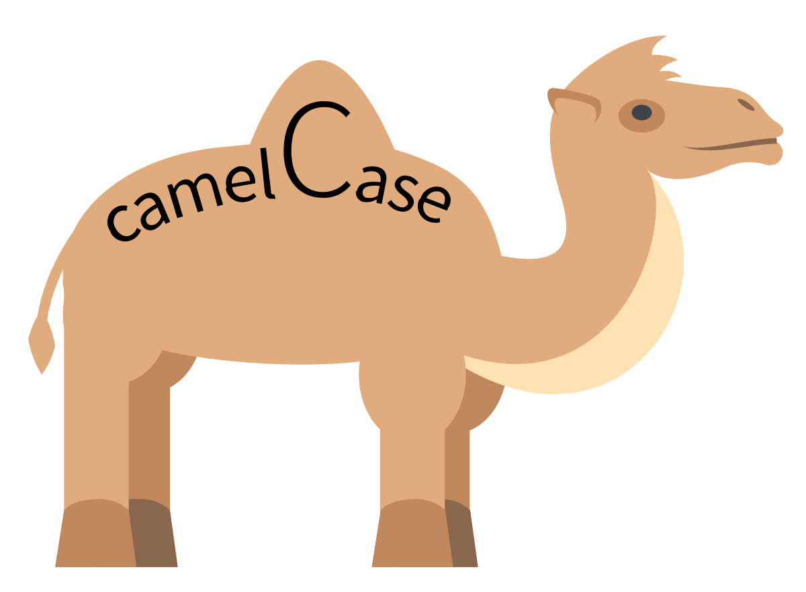

2+2[1] 4Jeremy McWilliams
The grey rectangle below is a “code chunk”. Everything withing the grey area is interpreted as R code. To run the code, click the green triangle in the upper-right corner.
In this example, R can perform basic math:
Now it’s your turn. Enter code below to subtract ten from twenty-two:
We’ll be working a lot with variables throughout this semester. A variable is a name you give to some value. The value could be a single number, a word, a bunch of words, an entire data set, etc.
Most scripting languages use the “=” sign to assign a value to a variable, but R uses “<-”.
It’s important to note that creating a new variable using code above doesn’t give you any output. Often it’s a good idea to print your variable to the screen, just to confirm it worked the way you intended:
[1] 10Now it’s your turn. Create a variable “y”, set it equal to 7+9, and then print it out:
Coding languages, including R, have functions that help you quickly execute common tasks. Functions typically take the form of:
functionName(argument1, argument2, etc….)
Arguments are the inputs you send to a function, so it has all the information it needs to perform its operation.
For example, the function sqrt(number) takes the square root of a number. This lets us quickly compute the answer, rather than having to write the formula for a square root.
YOUR TURN: In the chunk below, create a variable z, set it equal to the square root of 90, and print it out:
One nice thing about rstudio is that you can readily access documentation for functions by using the “help” command:
The documentation appears in the lower right window in the “help” tab.
One key question: how do you know what functions exist, and what they do?
Answer: you Google what you’re trying to do! In the case of R, you might search “How do I do ‘x’ in R?”
Let’s say you are interested in calculating the absolute value (positive distance from zero) of -35 in R. Take a moment with your group/neighbors, and try to find the answer by searching the internet. In the code chunk below, use the function you found to compute this calculation:
So far we’ve created variables that have single values (e.g. x<-7), but there are often cases where we need to assign multiple values to a variable. These types of variables are called vectors.
In order to create a vector, you can use the “c” function (c stands for “combine”). Here’s an example:
Now it’s your turn. Create a vector called mySecondVector, assign the values 8, -11, 100, 35 to it, and print it to the screen:
[1] 8 -11 100 35Before moving on, let’s talk a little about variable naming conventions. We started out using x, y, and z when learning about variables. That technically works, but it’s better practice to be more descriptive in your variable names. The examples above and below use a syntax called “camel case”. This allows you to string words together without spaces, but preserves quick readability. From this point on, we’re going to create variables with camel case - you should too!

It may not be immediately clear what the utility of vectors is, so let’s take a look at a practical use case. Below is a vector containing the responses from you and your classmates (and U of Arizona students) on self-reported fishing skill (1 being low, 5 being high):
fishingSkill<-c(1,2,2,1,1,1,1,2,2,5,1,2,2,1,5,3,4,4,4,2,1,2,2,3,2,1,2,2,2,1,5,2,3,1,4,5,2,2,2,1,1,1,1,2,3,1,1,2,1,3,1,1,1,1,2,2,5,3,1,1,1,1,2,1,3,2,5,1,2,3,3,2,3,5,2)
fishingSkill [1] 1 2 2 1 1 1 1 2 2 5 1 2 2 1 5 3 4 4 4 2 1 2 2 3 2 1 2 2 2 1 5 2 3 1 4 5 2 2
[39] 2 1 1 1 1 2 3 1 1 2 1 3 1 1 1 1 2 2 5 3 1 1 1 1 2 1 3 2 5 1 2 3 3 2 3 5 2Let’s say we’re interested in finding the average of all the responses. We can do this by use the mean function in R: (we’ll dive more into descriptive statistics next week, and how they differ from inferential)
We can also calculate the median (the “middle” value, when data is in numerical order) with the median function:
We can also calculate the standard deviation (a measurement of how spread apart the data is):
Now it’s your turn. Given the vector below of self-reported cooking skill ranking, calculate its mean, median, and standard deviation:
One of the most common uses of R is to load a data set into R as a variable, and then use that data to ask and answer questions with code. Let’s start off by loading a package called the Tidyverse. The Tidyverse is a series of functions written by data scientists to make working with data a little easier. We can load it by running the following command:
── Attaching core tidyverse packages ──────────────────────── tidyverse 2.0.0 ──
✔ dplyr 1.1.4 ✔ readr 2.1.5
✔ forcats 1.0.0 ✔ stringr 1.5.1
✔ ggplot2 3.5.1 ✔ tibble 3.2.1
✔ lubridate 1.9.3 ✔ tidyr 1.3.1
✔ purrr 1.0.2
── Conflicts ────────────────────────────────────────── tidyverse_conflicts() ──
✖ dplyr::filter() masks stats::filter()
✖ dplyr::lag() masks stats::lag()
ℹ Use the conflicted package (<http://conflicted.r-lib.org/>) to force all conflicts to become errorsNotice in the Files tab in the lower-right window, there is a file titled teamAntarcticaData.csv. This is a copy of the spreadsheet data from the Google form. Below, we can assign the entire data set to a variable using the read_csv function:
Rows: 75 Columns: 12
── Column specification ────────────────────────────────────────────────────────
Delimiter: ","
chr (7): Timestamp, school, swim, animals, parkaColor, teamFlag, distance
dbl (5): fishing, cold, remote, bedsideManner, cooking
ℹ Use `spec()` to retrieve the full column specification for this data.
ℹ Specify the column types or set `show_col_types = FALSE` to quiet this message.# A tibble: 75 × 12
Timestamp school fishing swim cold animals remote parkaColor teamFlag
<chr> <chr> <dbl> <chr> <dbl> <chr> <dbl> <chr> <chr>
1 8/30/2022 16:0… Unive… 1 Yes 4 Yes 4 Gold Penguin
2 8/30/2022 16:0… Unive… 2 Yes 4 Yes 5 Blue Bear
3 8/30/2022 16:0… Unive… 2 Yes 4 Yes 3 Green Penguin
4 8/30/2022 16:0… Unive… 1 Yes 1 Yes 1 Blue Seal
5 8/30/2022 16:0… Unive… 1 Yes 3 Yes 3 White Sea Spi…
6 8/30/2022 16:0… Unive… 1 Yes 3 Yes 3 hot pink Penguin
7 8/30/2022 16:0… Unive… 1 Yes 2 Yes 3 Blue Sea Spi…
8 8/30/2022 16:0… Unive… 2 Yes 2 Yes 4 Blue Penguin
9 8/30/2022 16:0… Unive… 2 Yes 2 Yes 5 White Bear
10 8/30/2022 16:0… Unive… 5 Yes 5 Yes 5 Blue Penguin
# ℹ 65 more rows
# ℹ 3 more variables: distance <chr>, bedsideManner <dbl>, cooking <dbl>Earlier in this exercise we looked at the array of responses for both fishing and cooking aptitude, though in both cases the vectors were hand-typed (by me). A much more common way to acquire, and then use, a vector of data is to directly query the data set. You can get a vector (a.k.a. column) of data by using the following syntax:
dataSet$columnName
Let’s get all responses for fishing aptitude directly from the data set:
[1] 1 2 2 1 1 1 1 2 2 5 1 2 2 1 5 3 4 4 4 2 1 2 2 3 2 1 2 2 2 1 5 2 3 1 4 5 2 2
[39] 2 1 1 1 1 2 3 1 1 2 1 3 1 1 1 1 2 2 5 3 1 1 1 1 2 1 3 2 5 1 2 3 3 2 3 5 2And just like before, we can calculate the mean, median, and standard deviation:
Now it’s your turn:
Use the data set to get the column values for tolerance of cold (hint: after typing the $, use auto-complete to select the column name). Calculate its mean, median, and standard deviation.
# create a vector that contains the column values for cold tolerance
cold<-teamAntarcticaData$cold
#calculate the mean
mean(cold)[1] 3.373333[1] 3[1] 0.9969322Now do the same for comfort level with being in a remote location:
# create a vector that contains the column values for comfort level with remote location
comfort<-teamAntarcticaData$remote
#calculate the mean
mean(comfort)[1] 3.28[1] 3[1] 1.133757Now create a vector to get the responses for parka color. How is this data different from the other examples we’ve seen? What can we learn from the data?
[1] "Gold" "Blue" "Green"
[4] "Blue" "White" "hot pink"
[7] "Blue" "Blue" "White"
[10] "Blue" "purple" "White"
[13] "Green" "Black" "White"
[16] "Orange" "Orange" "Orange"
[19] "White" "Blue" "Black"
[22] "Blue" "Pink, if possible" "green"
[25] "Black" "Black" "White"
[28] "Black" "White" "Blue"
[31] "Green" "Blue" "Black"
[34] "Blue" "White" "Blue"
[37] "Green" "Blue" "Black"
[40] "Blue" "Blue" "Black"
[43] "Blue" "Black" "Blue"
[46] "Orange" "Orange" "Blue"
[49] "Orange" "Black" "Black"
[52] "Pink" "Baby Pink" "Blue"
[55] "Lavender/purple" "White" "Black"
[58] "Black" "Blue" "Black"
[61] "Orange" "Blue" "Blue"
[64] "Blue" "Orange" "White"
[67] "Orange" "Black" NA
[70] "Black" "White" "Black"
[73] "Black" "Orange" "Purple"